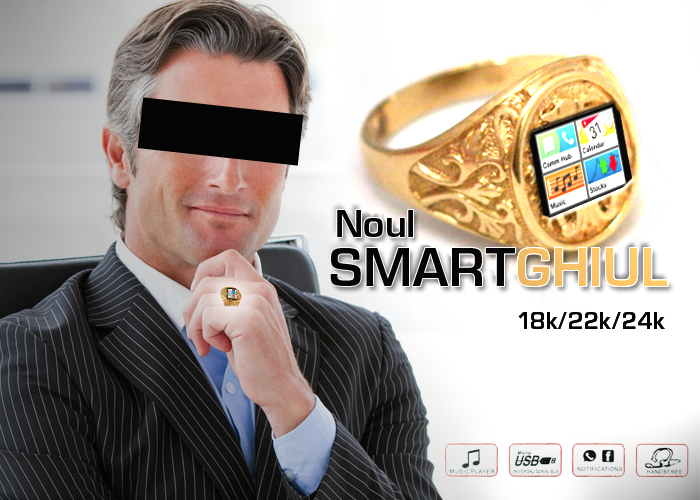

Sute de braşoveni au ieşit să se bată cu urşii, în speranţa că iau şi ei Oscarul.
Isterie mare printre moldoveni! Entuziasmați că Leonardo DiCaprio a luat Oscarul pentru actorie după ce s-a bătut cu ursul în pădure, mii de brașoveni nu s-au dus astăzi la muncă și au invadat munții din apropiere în speranța că au și ei o șansă la Oscar.Citește mai mult...
Reformă în Educație! Copiii pot înlocui ora de sport cu FIFA 2016.
Vremea în care copiii veneau cu scutiri la sport pentru tot felul de motive s-a încheiat. Începând de anul viitor, orele de sport pot fi înlocuite cu jocuri sportive pe calculator. Mai mult, există și un proiect prin care proba de sport la bacalaureat să poată fi dată pe tabletă, dar numai la o disciplină olimpică.Citește mai mult...
Final de sesiune. Studenţii români au băut 174 de milioane de beri
Prima sesiune de examene din acest an se apropie de final sau, în unele cazuri, s-a încheiat deja. Este vremea bilanțurilor, a rezumatelor și a deciziilor. Până acum, conform datelor oficiale, studenții români au băut în această sesiune 174 de milioane de beri. Citește mai mult...
Uită de smartwatch! Un IT-ist român a creat smart-ghiulul, cu care dai bani la lăutari contactless.

Credeai că tehnologia wearable nu mai are nimic nou de dezvăluit? Un startup din sectorul 4 al Capitalei a scos pe piaţă un obiect ingenios care te va face să uiţi de smartwatch! Este vorba despre Smart-ghiul, un gadget din aur masiv, purtat pe deget, care integrează o serie întreagă de aplicaţii revoluţionare.Citește mai mult...